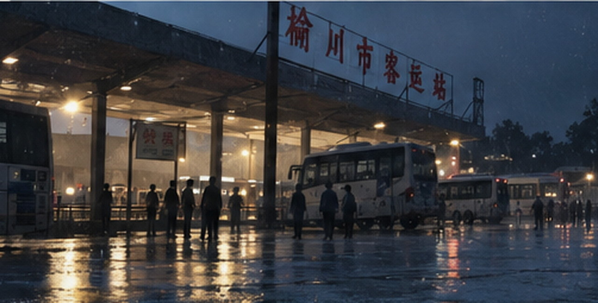

2026-09-18 · 城市专题
榆桥旧客运站，最后十二天
一座用了三十七年的客运站将在月底停用，我们把还能找到的旧网页和纸面材料放回它们原来的日期

榆桥旧客运站南门，2026年9月，摄影：顾远
榆桥客运站将在本月底停止使用，售票厅已经搬走一半设备，南门雨棚下仍有人等车，早班司机照旧在门口买豆浆，拆除公告贴出来以后，附近居民问得最多的仍是新站怎么换乘、原来的县际线从哪里发
城市栏目从六月开始整理旧站网页，企业官网附件、十三中毕业页、个人空间、地方论坛，还有一个停更十多年的巴士爱好站，它们没有共同的叙述者，大多数页面也并不重要，只是把某一天留下得比记忆稍微具体一点
赵宁是在整理名单里出现的一个名字，2008年8月23日，她乘19:04的K203去南江读大学，父亲赵成山当时是榆运集团客运二队驾驶员，2025年去世，赵宁最初只同意公开学校毕业页和自己的旧个人空间，她说那天家里已经僵了几天，父亲早晨告诉她晚上有班，她便一直把那次离家记成“他没有来”
专题上线后收到的东西很杂，1998年的县际车票、候车室旁照相馆的塑料袋、印着旅店地址的名片，还有人为了东门口那家修鞋铺究竟是哪一年开张争了十几条留言，没有人能把这些细节排成一条整齐时间线
赵宁后来补发过一封邮件，说父亲在榆运工作二十多年，绝大多数日子只是按点上班、回家吃饭、把钥匙放进玄关的小铁盒，她希望那些旧页面仍按原来的时间和栏目保存，不另外整理成一条只关于父亲的时间线
9月18日下午四点，旧站外仍有人拖着箱子进出，蓝色站牌已经拆掉两块，K203这个班次号也早已停用，售票厅门口贴着迁站说明，南门雨棚下还有三个人在等当天最后几班县际车